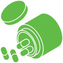

tratamiento endocrinologo
Para un mejor control de tu tratamiento, el día de la toma de muestra, debes tomar tu medicación habitual (de ayunas) recetada por tu endocrinóloga

Ayuno de entre 8 a 12 horas previas a la toma de muestra

Evitar esfuerzo físico antes de la toma

No estar atravesando un proceso viral o bacteriano

Tomar la muestra de preferencia entre las 7 y 9 de la mañana

Cena o comida habitual por la noche previo al ayuno
antes de tu toma de muestra
2 meses
15 días
7 días
¡Importante!
Puede variar según las indicaciones de tu médico
Reposa una noche en Lima antes de la toma de muestra
Toma tu prueba 10 días a tu cita
Toma de muestra durante el 3er o 4to día del ciclo menstrual